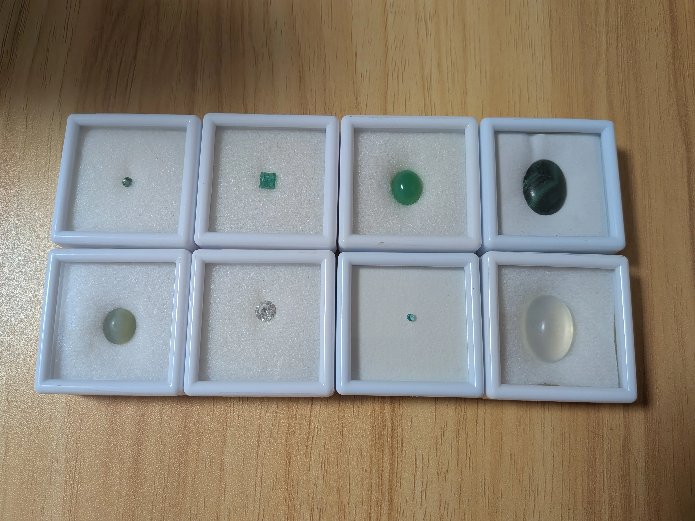
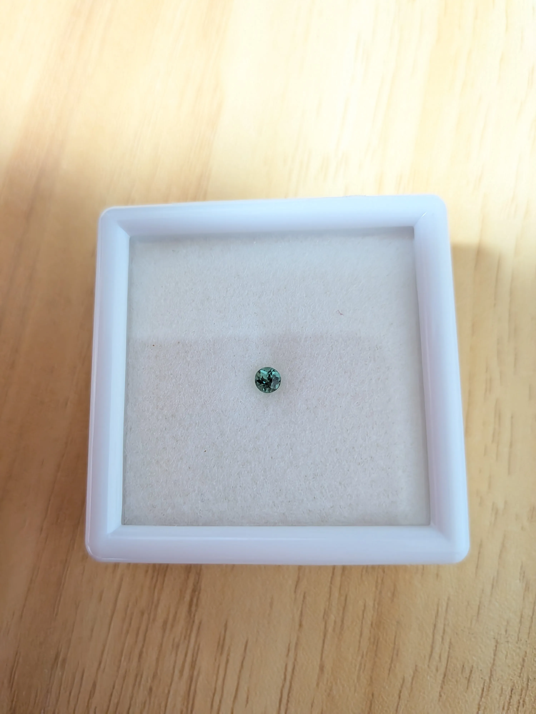
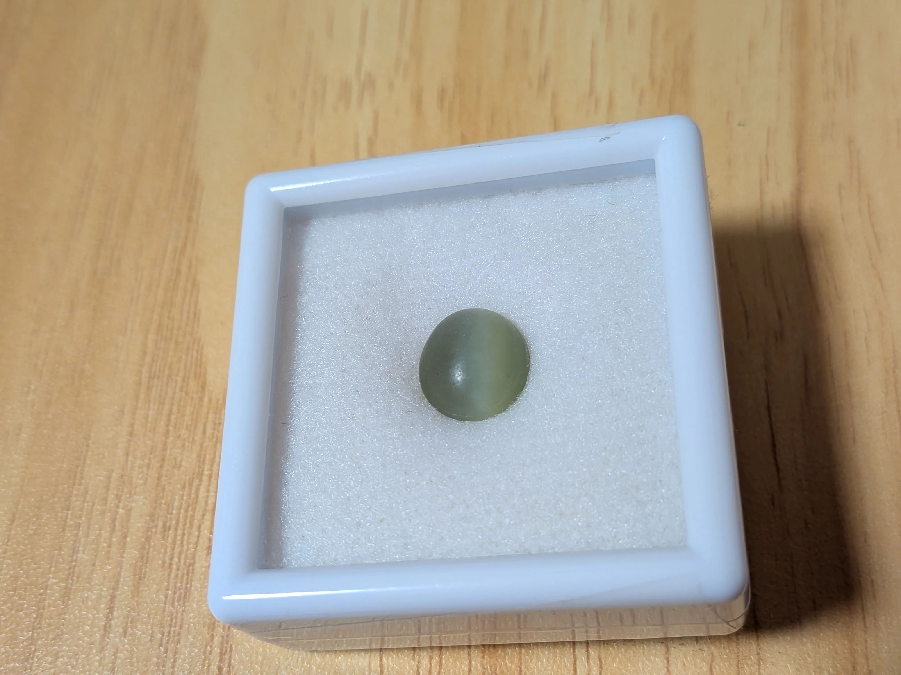
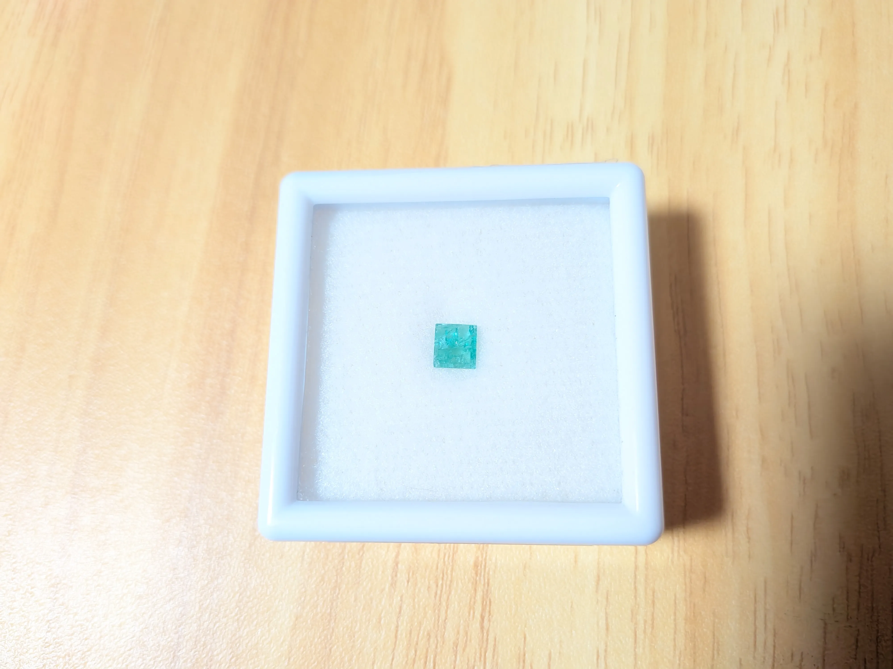
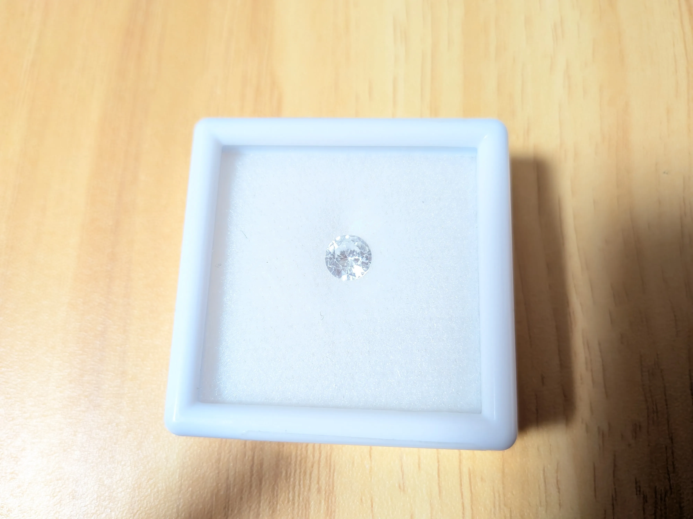
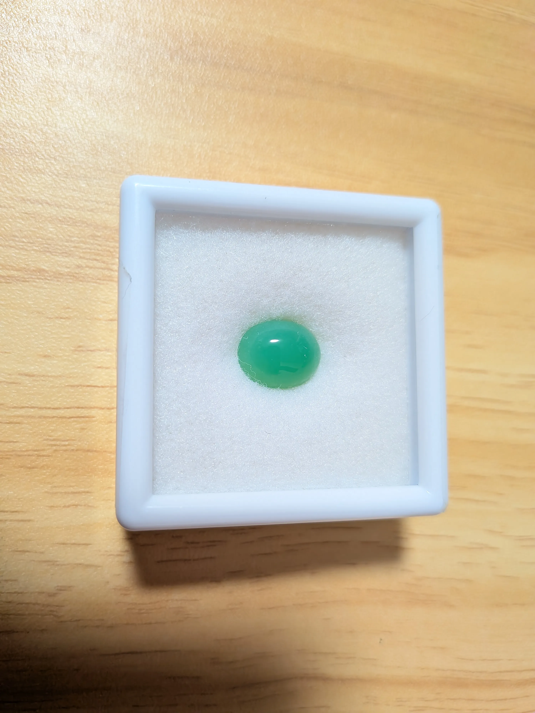
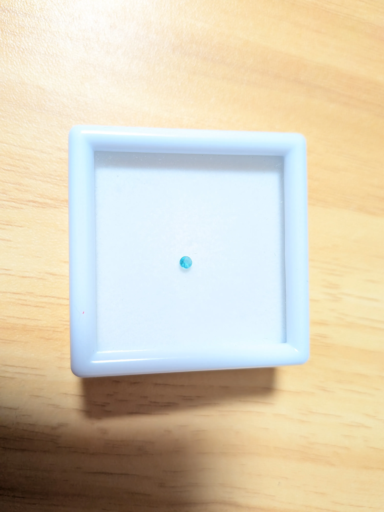
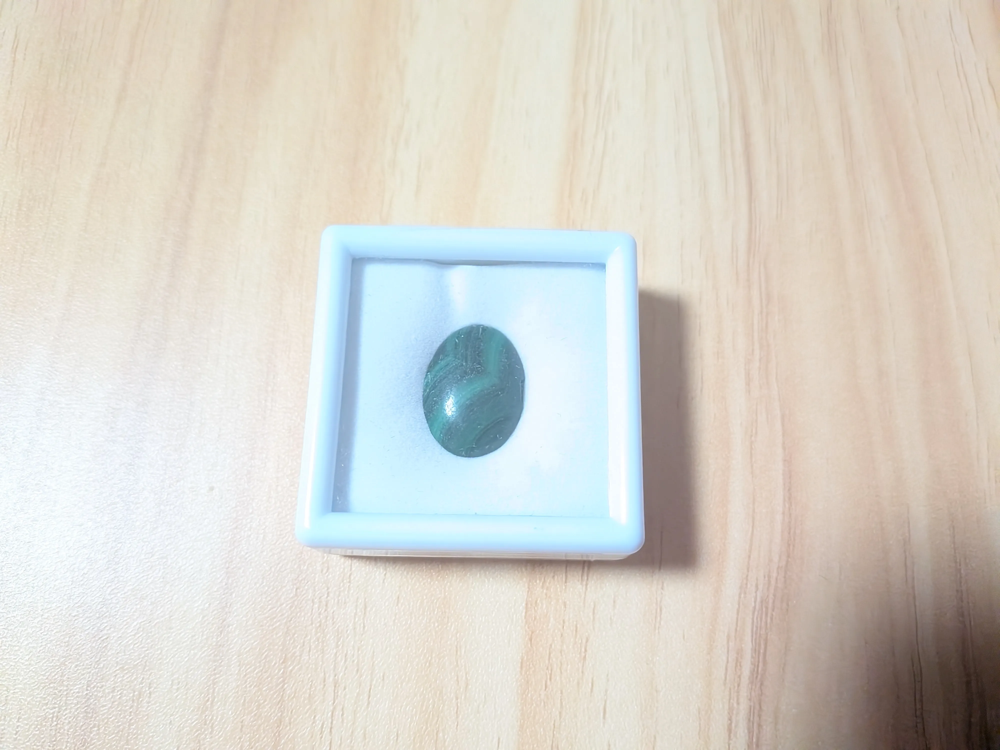
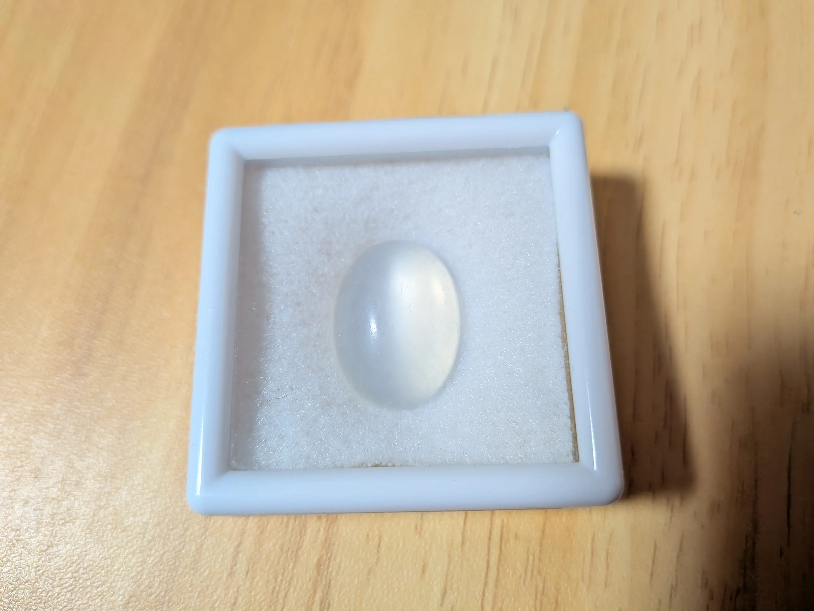

私が集めている宝石たちの一覧です。
一つひとつの石に、それぞれ違う表情と物語があります。

和名:『電気石』 石言葉:「希望」「無邪気」「潔白」「友情」「寛大」 解説: 10月の誕生石でもあるよ。

和名:『猫目軟玉』 石言葉：「まなざしの魅力」 解説:「キャッツアイ効果」が特徴。

和名:『緑柱石』 石言葉：「癒し」「健康」「安定」「精神的平和」 解説：5月の誕生石でもあるよ。

和名:『風信子鉱』 石言葉：「成功」「安らぎ」「生命力」「祈り」 解説：地球最古（約44億年前）の鉱物…らしい。カラーバリエーションも豊富。

和名:『緑玉髄』 石言葉：「豊かな実り」「希望」「平和」「自己実現」 解説：美しいグリーンアップル色が特徴。

和名:『リチア電気石』 石言葉：「ルーツ」「真実」「友愛」「勝利」 解説：鮮やかなネオンブルーやエレクトリックブルーを放つ、世界三大希少石の一つ。

和名:『孔雀石』 石言葉：「癒し」「魔除け」「洞察力」「再会」 解説：絵の具の顔料（岩緑青）として愛された。

和名:『月長石』 石言葉：「愛」「癒し」「幸運」 解説：光の反射で幻想的な光が浮かび上がる「シラー効果」が特徴。